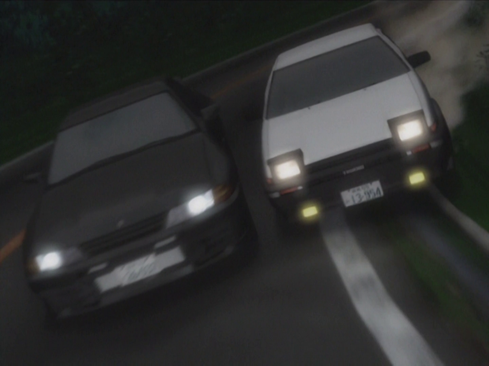

As you're nearing the end of the race, you approach a group of hairpin turns, you know you're car is superior to the R32 due to it's weight and think you can pull off a move to gain the lead, however the line you have to use involves driving over a dirt patch. Do you...

Pull back and try at the next hairpin -
Hold your line, then quickly switch to the outside -
Bump Takeshi out of the way -